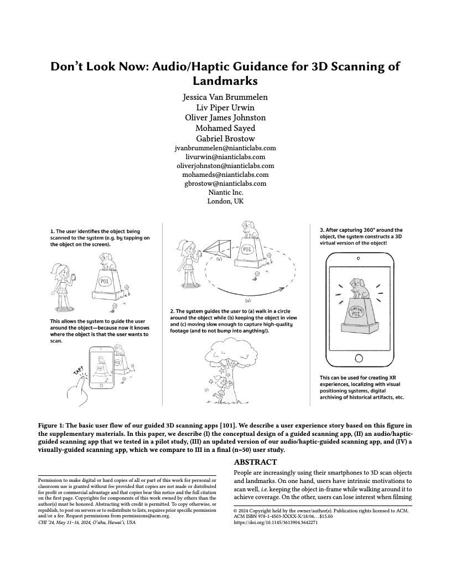

Abstract
People are increasingly using their smartphones to 3D scan objects and landmarks. On one hand, users have intrinsic motivations to scan well, i.e. keeping the object in-frame while walking around it to achieve coverage. On the other, users can lose interest when filming inanimate objects, and feel rushed and uncertain of their progress when watching their step in public, seeking to avoid attention.
We set out to guide users while reducing their stress and increasing engagement, by moving away from the on-screen feedback ubiquitous in existing products and apps meant for 3D scanning. Specifically, our novel interface gives users audio/haptic guidance while they scan statue-type landmarks in public. The interface results from a conceptual design process and a pilot study. Ultimately, we tested 50 users in an ultra-high-traffic area of central London. Compared to regular on-screen feedback, users were more engaged, had unchanged stress levels, and produced better scans.
30s Fast Forward
Resources
Long-Form Video
Paper
Supplemental

Acknowledgements
Special thanks to Diego Mazala, Charlie Houseago, Max Heimbrock, Kelly Cho, George Ash, Amy Duxbury, Jessica Nunn, Alex Morris, Summer Gu, Sen Chang, Keith Ito, Keir Rice, Thomas Hall, KP Papangelis, and Matthew Prestopino for their help with debugging, giving feedback, brainstorming, and/or organizing this project. Thanks to Vanessa Van Brummelen for her excellent, informative scanning illustration. Last but not least, thanks to all of our study participants and the reviewers for their valuable time and feedback.